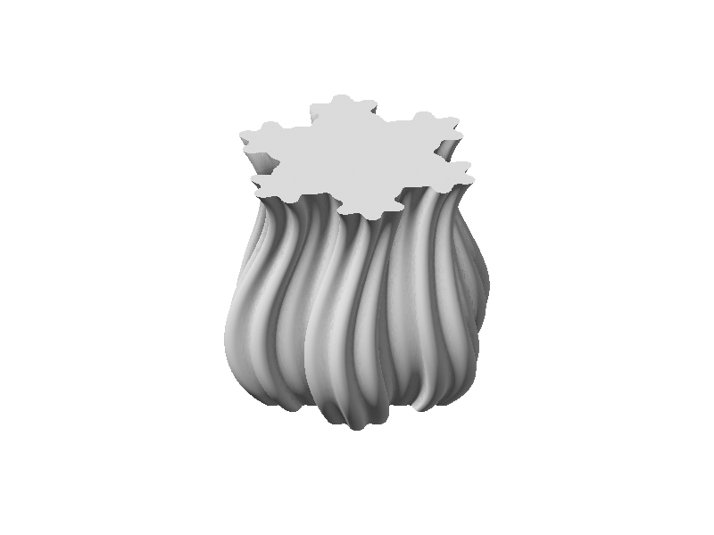
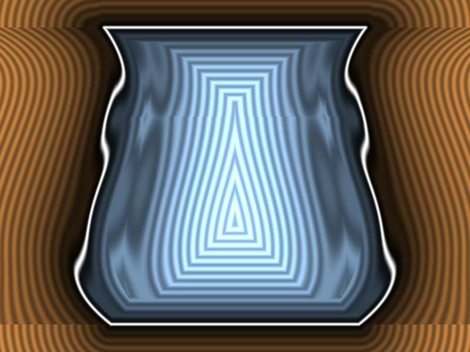

vase-funky-2
Drafted with AI, not yet reviewed
Funky vase 2: a hexagon with two levels of hexagons at its corners, opened and closed by 3 mm, rising 120 mm while it twists along one Bézier schedule and widens along another.
Ported from src/vases/funky_2.scad. What differs, and why:
- One solid instead of 36 stacked slices: the twist and the scale follow their Bézier schedules smoothly, where OpenSCAD’s slices step through them linearly. The twist differs by up to 0.65 degrees, 0.7 mm at the rim; the scale by under 0.1 mm.
- The open-close, OpenSCAD’s offset(-r) offset(2r) offset(-r), cancels on a field. Each hexagon is opened on its own instead, shrunk and grown back as an exact offset, and the closing is union_round of all 43.
- Round arcs where OpenSCAD’s $fn = 12 leaves 12-gons.
Compared with the original: within 0.98 mm, against slices worked out from its profile.


Files
Source
// SPDX-License-Identifier: 0BSD // // Funky vase 2: a hexagon with two levels of hexagons at its corners, // opened and closed by 3 mm, rising 120 mm while it twists along one // Bézier schedule and widens along another. // // Ported from `src/vases/funky_2.scad`. What differs, and why: // // - One solid instead of 36 stacked slices: the twist and the scale follow // their Bézier schedules smoothly, where OpenSCAD's slices step through // them linearly. The twist differs by up to 0.65 degrees, 0.7 mm at the // rim; the scale by under 0.1 mm. // - The open-close, OpenSCAD's offset(-r) offset(2r) offset(-r), cancels on // a field. Each hexagon is opened on its own instead, shrunk and grown // back as an exact offset, and the closing is union_round of all 43. // - Round arcs where OpenSCAD's $fn = 12 leaves 12-gons. // // Compared with the original: within 0.98 mm, against slices worked out // from its profile. // --- Parameters --- const H = 120.0; // height const SIDES = 6; // sides of the base polygon const R = 35.0; // radius of the base polygon const LEVELS = 2; // levels of polygons at the corners const ROUNDING = 3.0; // the profile's open-close // The schedules, as OpenSCAD's slices take them: the turn of each slice, // in degrees, clockwise, times the number of slices, along a cubic Bézier // curve; and the scale. const TWIST = [0.0, 120.0, -180.0, 30.0]; const SCALE = [1.0, 2.0, 0.5, 1.2]; // --- Profile --- // A polygon of radius r, its corners rounded as OpenSCAD's opening rounds // them: shrunk by ROUNDING, then grown back by an offset, which is exact. fn polygon_opened(r) { let n = global::SIDES; regular_polygon(n, r - global::ROUNDING / cosd(180.0 / n)).offset(global::ROUNDING) } // The polygon of radius r and, at each of its corners, the same a third // the size, `levels` deep: OpenSCAD's corners(r) corners(r / 3). fn polygons(r, levels) { let parts = [polygon_opened(r)]; if levels > 0 { for i in 0..global::SIDES { for p in polygons(r / 3.0, levels - 1) { parts.push(p.move([r, 0]).rotate_z(360.0 * i / global::SIDES)); } } } parts } let profile = union_round(polygons(R, LEVELS), ROUNDING); // --- Vase --- // OpenSCAD turns each slice by TWIST's curve at that slice, so the turn at // a height is the curve's integral. Its turn is clockwise; extrude's is // anticlockwise. let vase = profile.extrude([0, H], #{ twist: |t| -bezier_point(bezier_integral(TWIST), t), scale: |t| bezier_point(SCALE, t), }); draw(vase);